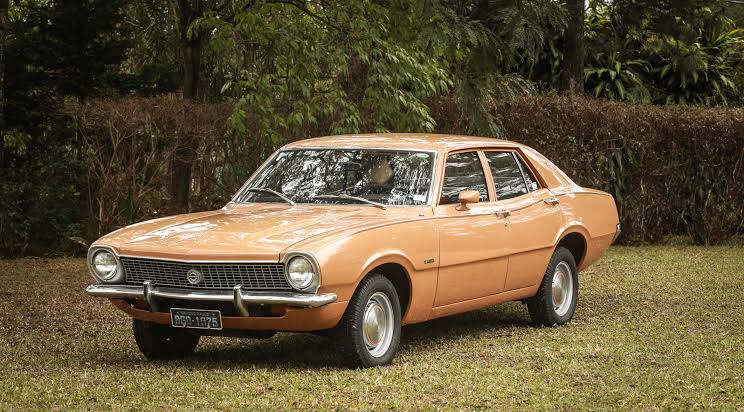

OLDSCHOOL
Ficha Técnica
Ano
1973 - 1979
Motor
V8 5.0
Potência
199 cv
Câmbio
Manual | 4 marchas
Tração
Traseira
Carroceria
Coupé
Combustível
Gasolina
FIPE
R$ 80.000 ~ R$ 250.000
O clássico americano que ganhou alma brasileira
Com seu visual agressivo, tração traseira e o lendário motor V8, o Maverick se tornou um dos carros mais desejados de sua época. Produzido no Brasil pela Ford, marcou uma geração e até hoje é lembrado como um dos grandes muscle cars da história nacional.